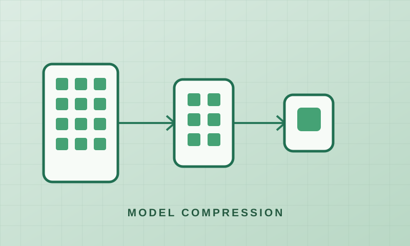

YOLO Quantization Framework
A five-stage Python framework for FPGA-aware YOLO quantization and fixed-point hardware simulation, with less than 0.5% degradation compared with the floating-point baseline.
Highlights
- Built a five-stage Python pipeline covering FPGA-aware quantization of a YOLO object detector.
- Simulated fixed-point hardware arithmetic to check accuracy before committing to an FPGA design.
- Kept degradation below 0.5% across the reported detection metrics compared with the floating-point baseline.